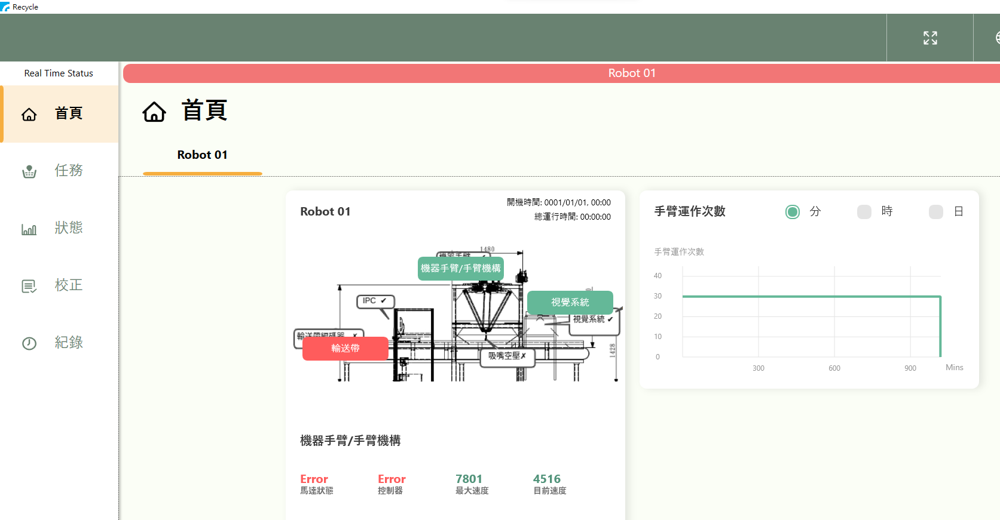
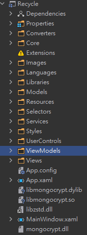

WPF 與 MongoDB 目錄結構說明 !
*. WPF 首頁 (進入點) / 任務 / 狀態 / 校正 / 紀錄

*. Directory: 目錄結構如下

*. d/f 目錄/檔名 :: 只對WPF有使用到mongoDB的目錄做解釋
d-----Models
--MongoDB Model對應MVC裡面的Ｍ，有兩部份，一是抓取紀錄(MongoPickDBmodel.cs)，二是錯誤紀錄(MongologDBmodel.cs)

d-----Services
--MongoDB Service對應MVC裡面的C(controller)，有兩部份，一是抓取紀錄(MongoPickMongoServices.cs)，二是錯誤紀錄(MongoLogMongoServices.cs)

d-----UserControls
--對應WPF UI的細部元件之使用者控制邏輯撰寫

d-----ViewModels
--對應WPF UI的頁面之使用者控制邏輯撰寫

d-----Views
--對應WPF UI的頁面之Layout之設計與對應binding ViewModel跟UserControl的Method邏輯撰寫

d-----Selectors
d-----Dependencies
d-----Properities
d-----Converters
d-----Core
d-----Images
d-----Languages
d-----Libraries
d-----Resources
d-----Styles
-f----App.config
-f----App.xaml
-f----App.xaml.cs
-f----MainWindows.xaml